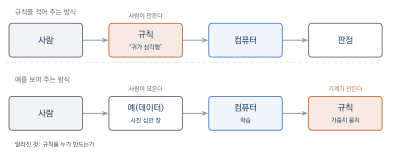
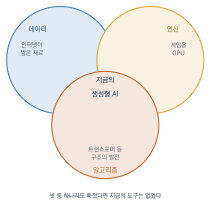
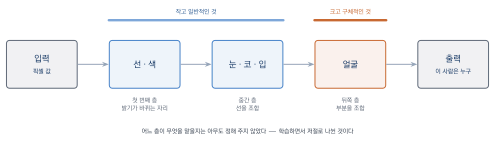
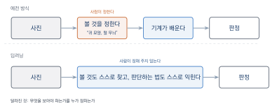
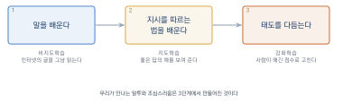
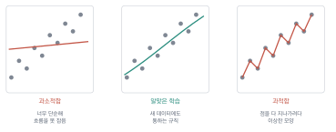
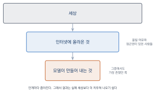

기계는 어떻게 배우는가
이 장을 마치면
- 학습이라는 말이 기계에게 무엇을 뜻하는지 설명할 수 있다.
- 신경망이 아주 단순한 계산의 반복으로 이루어져 있음을 이해한다.
- 지도학습·비지도학습·강화학습의 차이를 예를 들어 구분할 수 있다.
- 지금의 인공지능을 가능하게 한 세 가지 조건을 설명할 수 있다.
- 학습 데이터의 편향이 결과물에 어떻게 드러나는지 직접 확인할 수 있다.
인공지능이 만든 그림이 마음에 들지 않을 때, 무엇을 바꿔야 할지 아는 사람과 모르는 사람의 차이는 결국 이 기계가 어떻게 작동하는지를 아느냐에서 갈린다. 이 장에서는 수식이나 코드 없이 기계학습의 작동 원리를 살펴본다. 목표는 인공지능을 만들 수 있게 되는 것이 아니라, 인공지능이 왜 그런 결과를 내놓는지 짐작할 수 있게 되는 것이다.
2.1 학습이란 무엇인가
기계가 배운다는 말은 무슨 뜻일까. 사람이 배우는 것과 같은 일이 벌어지는 걸까. 이 절에서는 그 말의 정확한 의미를 짚는다. 먼저 간단한 실험부터 해 보자.
고양이를 규칙으로 설명해 보기
컴퓨터에게 고양이 사진을 알아보게 만든다고 하자. 옛날 방식은 사람이 규칙을 적어 주는 것이었다. 지금 잠깐 책을 덮고, 종이에 고양이란 무엇인가를 컴퓨터가 확인할 수 있는 조건으로 적어 보자.
아마 이렇게 시작할 것이다.
- 귀가 삼각형이고 위로 솟아 있다
- 수염이 있다
- 털로 덮여 있다
- 다리가 넷이다
- 눈동자가 세로로 길다그럴듯하다. 그런데 곧 문제에 부딪힌다. 귀가 접힌 스코티시폴드는 어떻게 하나. 털이 없는 스핑크스는. 뒤에서 찍어 눈이 안 보이는 사진은. 상자 안에 웅크려 다리가 하나도 안 보이는 사진은. 예외를 만날 때마다 규칙을 덧붙이다 보면 규칙은 수백 개로 불어나고, 서로 충돌하기 시작하며, 그러고도 여전히 틀린다.
더 근본적인 문제가 있다. 귀가 삼각형이다를 컴퓨터가 어떻게 확인하는가. 컴퓨터에게 사진은 그저 수백만 개의 숫자, 즉 픽셀 밝기 값의 나열일 뿐이다. 삼각형이라는 개념은 그 숫자들 어디에도 적혀 있지 않다.
사람은 고양이를 알아보지만 어떻게 알아보는지는 설명하지 못한다. 설명할 수 없는 것은 규칙으로 적을 수 없다. 이것이 규칙을 손으로 적어 넣는 방식, 즉 전문가 시스템expert system이 벽에 부딪힌 지점이다.
규칙 대신 예를 준다
1980년대까지 인공지능 연구의 주류는 이 전문가 시스템이었다. 의사의 진단 규칙을 수천 개 모아 넣은 의료 진단 프로그램처럼 특정 분야에서는 꽤 쓸모가 있었다. 그러나 규칙을 사람이 다 적어야 한다는 한계는 끝내 넘지 못했다.
발상을 뒤집은 것이 머신러닝machine learning이다. 규칙을 적어 주는 대신 예를 잔뜩 보여 주고 규칙을 스스로 찾게 한다. 고양이 사진 십만 장과 고양이가 아닌 사진 십만 장을 주고 이렇게 말하는 것이다. 이 두 무더기를 가르는 기준을 네가 알아내라.
기계가 찾아낸 기준은 사람이 말로 옮길 수 있는 형태가 아니다. 그것은 수많은 숫자의 조합으로 존재하며, 우리는 그것이 잘 작동하는지 확인할 수 있을 뿐 무엇을 근거로 판단했는지 온전히 들여다볼 수는 없다. 이 점은 뒤에서 편향 문제를 다룰 때 다시 중요해진다.

그림 2.1에서 보듯 두 방식은 사람이 무엇을 만들어 넣느냐가 다르다. 위쪽은 사람이 규칙을 만들어 넣고 컴퓨터가 그것을 실행한다. 아래쪽은 사람이 예를 모아 넣고 컴퓨터가 규칙을 만들어 낸다. 이 차이가 창작자에게 갖는 의미는 뚜렷하다. 지금 우리가 쓰는 이미지 생성 도구는 누군가 좋은 그림 그리는 법을 규칙으로 적어 넣어 만든 것이 아니라, 인터넷에 있던 수억 장의 그림을 보고 스스로 찾아낸 것이라는 뜻이다.
학습의 세 요소: 과제, 경험, 성능
머신러닝을 조금 더 정확하게 정의해 보자. 널리 인용되는 정의는 다음과 같다.
어떤 컴퓨터 프로그램이 과제를 수행하면서 경험이 쌓임에 따라 그 과제에 대한 성능이 나아진다면, 그 프로그램은 학습한다고 말한다.
세 가지가 모두 있어야 한다는 점이 핵심이다. 우리가 쓰는 도구에 이 셋을 대입해 보자.
- 과제: 문장이 주어졌을 때 그에 맞는 이미지를 만들어 낸다.
- 경험: 설명이 붙은 이미지를 수억 장 본다.
- 성능: 만들어 낸 이미지가 원래 이미지와 얼마나 비슷한가.
여기서 성능을 무엇으로 재는가가 결정적이다. 기계는 성능 지표를 높이는 방향으로만 움직이기 때문이다. 성능을 원본과의 비슷함으로 정의했다면, 그 모델은 아름다움이나 독창성을 배운 것이 아니라 그럴듯함을 배운 것이다.
이것이 인공지능 결과물이 어딘가 평균적으로 느껴지는 이유다. 모델은 좋은 그림을 목표로 학습한 적이 없다. 학습 데이터에 있을 법한 그림을 목표로 학습했다. 이 둘은 겹치는 부분이 많지만 같지 않으며, 그 틈이 바로 창작자가 개입해야 할 자리다.
일반화: 외우는 것과 배우는 것의 차이
기계가 학습을 잘했는지는 어떻게 아는가. 보여 준 사진을 다시 보여 주고 맞히는지 확인하는 것으로는 부족하다. 그것은 외운 것일 수도 있기 때문이다.
그래서 머신러닝에서는 데이터를 나누어 쓴다. 일부는 학습 데이터training data로 가르치는 데 쓰고, 일부는 따로 감춰 두었다가 시험 데이터test data로 확인한다. 한 번도 보지 못한 데이터에서도 잘 해내는 능력을 일반화generalization라고 하며, 학습의 진짜 목표는 이것이다.
시험 범위를 통째로 외운 학생과 원리를 이해한 학생을 가르는 방법이 새로운 문제를 내 보는 것인 것과 같다. 인공지능도 마찬가지다. 그리고 사람과 마찬가지로, 외우기에 치우친 기계도 있다. 그 이야기는 2.5절에서 다룬다.
2.2 신경망: 단순한 계산의 거대한 반복
기계가 예에서 규칙을 찾아낸다고 했다. 그 일을 실제로 해내는 구조가 인공 신경망artificial neural network이다. 이름 때문에 뇌를 그대로 흉내 낸 무언가를 떠올리기 쉽지만, 실제로는 훨씬 단순하다. 이 절의 목표는 그 단순함을 확인하는 것이다.
인공 뉴런 하나가 하는 일
신경망의 최소 단위인 인공 뉴런artificial neuron 하나가 하는 일은 다음 세 단계가 전부다.
- 여러 개의 숫자를 입력받는다.
- 각 입력에 정해진 가중치weight를 곱해서 모두 더한다.
- 그 합이 크면 큰 값을, 작으면 작은 값을 내보낸다.
곱하고, 더하고, 내보낸다. 그게 전부다. 초등학교 산수를 넘지 않는다.

그림 2.2에서 왼쪽의 숫자들이 입력이고, 화살표에 붙은 값이 가중치다. 가중치가 크면 그 입력을 중요하게 본다는 뜻이고, 음수이면 반대로 본다는 뜻이다.
작품 공모전 심사에 빗대어 보자. 심사위원 한 명이 작품을 볼 때 완성도·독창성·주제 적합성 세 가지를 본다. 그런데 이 심사위원은 독창성을 특히 중시한다. 그렇다면 그의 머릿속 계산은 이런 식이다.
점수 = 완성도 x 0.2 + 독창성 x 0.6 + 주제적합성 x 0.2
점수가 일정 기준을 넘으면 -> 본선 진출여기서 0.2, 0.6, 0.2가 가중치다. 다른 심사위원은 다른 가중치를 갖는다. 그리고 가중치가 곧 그 심사위원의 안목이다. 인공 뉴런도 똑같다. 가중치 값이 그 뉴런이 무엇을 중요하게 보는지를 결정한다.
학습이란 결국 가중치를 조금씩 고쳐 나가는 일이다. 처음에는 아무렇게나 정해진 가중치로 시작해, 틀릴 때마다 조금씩 방향을 바꾼다. 인공지능 모델의 크기를 말할 때 나오는 파라미터 수가 바로 이 가중치의 개수다.
층을 쌓으면 무슨 일이 일어나는가
뉴런 하나로는 아주 단순한 판단밖에 못 한다. 그래서 뉴런을 옆으로 여러 개 늘어놓아 층layer을 만들고, 그 층을 여러 겹 쌓는다. 앞 층의 출력이 다음 층의 입력이 된다. 층을 깊게 쌓았다고 해서 딥러닝이라 부른다.
층을 쌓으면 왜 복잡한 것을 알아보게 될까. 얼굴을 알아보는 신경망 안을 들여다보면 대체로 이런 일이 벌어진다.
- 첫 번째 층은 아주 단순한 것에 반응한다. 밝기가 갑자기 바뀌는 자리, 즉 선과 색 덩어리.
- 중간 층은 앞 층이 찾아낸 선들을 조합한다. 선 몇 개가 특정 배치로 모이면 눈, 다른 배치로 모이면 코.
- 뒤쪽 층은 눈·코·입의 배치를 조합해 얼굴을 알아본다.

그림 2.3가 이 흐름을 나타낸다. 중요한 것은 어느 층이 무엇을 맡을지 사람이 정해 준 적이 없다는 점이다. 첫 층은 선을 찾아라라고 지시한 사람은 없다. 그저 얼굴 사진을 잔뜩 보여 주고 가중치를 고쳐 나갔더니, 그렇게 하는 것이 가장 효율적이라 저절로 그런 역할 분담이 생겨났다.
이것이 딥러닝이 앞선 방식들과 결정적으로 다른 점이다. 예전에는 무엇을 보아야 하는지를 사람이 정해 주어야 했다. 딥러닝은 그것마저 스스로 찾아낸다.

그림 2.4이 그 차이다. 예전 방식에서는 귀 모양을 보라처럼 무엇을 볼지 사람이 정해 주어야 했고, 그 목록이 곧 성능의 한계였다. 무엇을 보아야 하는지 사람도 모르는 문제, 예컨대 이 그림이 어떤 화풍인가 같은 것은 손을 대기 어려웠다.
층마다 다른 수준의 것을 본다는 성질은 창작 도구에서 그대로 쓰인다. 뒤쪽 층이 붙잡은 정보는 무엇이 그려져 있는가(내용)에 가깝고, 앞쪽 층이 붙잡은 정보는 어떤 질감과 붓질인가(스타일)에 가깝다. 그래서 한 그림에서 내용을 가져오고 다른 그림에서 스타일을 가져와 섞는 일이 가능해진다. 6–7장에서 스타일을 지정하고 참조 이미지를 넣는 작업이 바로 이 성질 위에 서 있다.
틀린 만큼 거슬러 올라가 고친다
가중치를 어떻게 고칠까. 신경망이 사진을 보고 고양이라고 답해야 하는데 개라고 답했다고 하자. 이때 하는 일은 대략 이렇다.
먼저 얼마나 틀렸는지를 숫자로 잰다. 그다음 마지막 층부터 거꾸로 거슬러 올라가며 이 오답에 네가 얼마나 기여했는가를 뉴런마다 따진다. 책임이 큰 가중치는 많이, 작은 가중치는 조금 고친다. 이 과정을 역전파backpropagation라고 한다.

그림 2.5의 네 걸음이 학습의 전부다. 새로울 것이 없어 보이는 이 한 바퀴를 수억 번 되풀이하는 것이 학습이다.
한 번에 확 고치지는 않는다. 아주 조금씩만 움직인다. 그 대신 이 과정을 수백만 번, 수십억 번 반복한다. 안개 속에서 산을 내려오는 사람이 발끝으로 경사를 더듬어 한 걸음씩 낮은 쪽으로 내려가는 것과 같다. 어디가 골짜기인지는 보이지 않지만, 매 걸음 조금씩 낮아지는 방향으로 가다 보면 결국 아래에 닿는다.
이 방식에는 대가가 따른다. 첫째, 엄청난 계산량이 든다. 큰 모델 하나를 학습시키는 데 상당한 규모의 전기와 장비가 들어가며, 이 때문에 최신 모델을 만들 수 있는 곳은 소수의 거대 기업으로 좁혀졌다. 둘째, 왜 그렇게 판단했는지 설명할 수 없다. 수천억 개 가중치의 조합이 낸 결론이라, 만든 사람조차 특정 결과의 이유를 짚어 내지 못한다. 인공지능이 이상한 결과를 낼 때 그 부분만 고쳐 달라고 요구하기 어려운 이유가 여기 있다.
2.3 학습의 세 가지 방식
무엇을 재료로 주느냐에 따라 학습 방식은 크게 셋으로 나뉜다. 이 구분을 알아 두면 도구의 설명 문구에 나오는 말들이 훨씬 잘 읽힌다.
지도학습: 정답을 붙여 준다
지도학습supervised learning은 데이터마다 정답을 붙여서 가르치는 방식이다. 고양이 사진에는 고양이, 개 사진에는 개라는 꼬리표를 달아 준다. 기계는 사진과 꼬리표의 대응 관계를 익힌다.
가장 널리 쓰이고 성능도 확실하다. 문제는 꼬리표를 사람이 달아야 한다는 점이다. 사진 백만 장에 일일이 이름을 붙이는 일은 엄청난 노동이며, 실제로 이 작업은 임금이 낮은 지역의 노동자들에게 대량으로 위탁되어 왔다. 인공지능이 저절로 똑똑해진 것처럼 보이지만, 그 뒤에는 눈에 잘 띄지 않는 사람의 노동이 깔려 있다.
창작 분야의 예로는 사진에서 배경을 자동으로 분리하는 기능, 손글씨를 활자로 바꾸는 기능, 음악의 장르를 알아맞히는 기능이 여기에 해당한다.
비지도학습: 정답 없이 구조를 찾는다
비지도학습unsupervised learning은 꼬리표 없이 데이터만 잔뜩 주고 여기서 뭔가 규칙적인 걸 찾아 봐라고 하는 방식이다. 기계는 비슷한 것끼리 묶거나, 데이터가 놓인 공간의 구조를 파악한다.
이 방식이 이 책에 특히 중요하다. 오늘날의 생성형 AI는 대부분 여기서 출발하기 때문이다. 인터넷의 글 수조 개, 이미지 수억 장에는 사람이 붙인 정답이 없다. 대신 모델은 다음에 올 낱말 맞히기나 노이즈를 걷어내기처럼 데이터 자체에서 문제를 뽑아내 스스로 풀며 배운다. 정답을 사람이 달아 주지 않아도 되니, 학습에 쓸 수 있는 데이터의 양이 단숨에 수천 배로 늘어났다.
꼬리표가 필요 없다는 점이 지금의 도약을 만들었다. 대신 그 대가로 인터넷에 올라와 있던 거의 모든 것이 학습 재료가 되었고, 이는 5장에서 다룰 저작권 논쟁의 씨앗이 되었다.
강화학습: 해 보고 상을 받는다
강화학습reinforcement learning은 정답을 알려 주는 대신 결과에 점수를 매기는 방식이다. 기계는 이것저것 시도해 보고, 점수가 높아지는 행동을 늘리고 낮아지는 행동을 줄인다. 바둑이나 게임을 배우는 인공지능이 대표적이다.
창작과 무관해 보이지만 그렇지 않다. 대화형 AI가 사람과 자연스럽게 말을 주고받는 데는 이 방식이 결정적이었다. 인터넷 글을 그대로 학습한 모델은 문장은 잘 만들지만 무례하거나 위험한 말도 거리낌 없이 한다. 그래서 사람이 여러 답변을 놓고 이게 저것보다 낫다고 평가한 자료를 모아, 그 평가를 상으로 삼아 모델을 다듬는다. 이 과정을 사람 피드백 기반 강화학습reinforcement learning from human feedback, RLHF이라고 한다.
여기서 중요한 사실이 하나 따라온다. 대화형 AI가 내놓는 답변의 말투와 태도는 자연스럽게 생긴 것이 아니라 사람이 평가해 만들어 넣은 것이다. 균형 잡힌 결론을 좋아하고, 단정을 피하고, 친절한 어조를 유지하는 성향도 그렇게 만들어졌다. 8장에서 인공지능이 쓴 글의 무난함을 깨는 방법을 다룰 때, 그 무난함이 어디서 왔는지 이 절을 떠올리기 바란다.
| 지도학습 | 비지도학습 | 강화학습 | |
|---|---|---|---|
| 주는 것 | 데이터 + 정답 | 데이터만 | 환경 + 점수 |
| 배우는 것 | 입력과 정답의 대응 | 데이터 속 구조 | 점수를 높이는 행동 |
| 한계 | 정답 붙이는 비용 | 무엇을 배웠는지 불분명 | 점수 설계가 어려움 |
| 창작 분야 예 | 배경 분리, 장르 분류 | 이미지·문장 생성 | 대화형 AI 다듬기 |
표 2.1에 셋을 정리했다. 실제 도구는 대개 이 방식들을 섞어 만든다. 예를 들어 지금 우리가 쓰는 대화형 AI는 비지도학습으로 언어를 익히고, 지도학습으로 지시를 따르는 법을 배우고, 강화학습으로 태도를 다듬는 세 단계를 모두 거친다.

그림 2.6처럼 세 방식은 경쟁하는 선택지가 아니라 차례로 쌓이는 단계에 가깝다. 1단계에서 말을 배우고, 2단계에서 물음에 답하는 형식을 익히고, 3단계에서 어떻게 답할지를 다듬는다.
2.4 무엇이 이 시대를 열었나
신경망은 새로운 발명이 아니다. 기본 아이디어는 1950년대에 나왔고, 앞 절에서 본 역전파도 1980년대에 자리를 잡았다. 그런데 왜 하필 지금인가. 왜 2010년대 후반부터 갑자기 이렇게 되었나.
답은 하나가 아니라 셋이다. 세 가지 조건이 거의 동시에 갖추어졌다.
데이터: 인터넷이 만든 재료 더미
신경망은 데이터를 많이 먹을수록 좋아진다. 그런데 1990년대에는 사진 수만 장을 모으는 일조차 대형 연구 과제였다. 인터넷과 스마트폰이 이 상황을 완전히 바꿨다. 사람들이 사진을 올리고, 설명을 달고, 댓글을 쓰고, 블로그를 쓰는 동안 인류는 스스로도 모르게 사상 최대 규모의 학습 자료를 만들어 낸 것이다.
이미지 생성 모델의 학습에 쓰인 대표적인 데이터 묶음에는 설명이 붙은 이미지 수십억 장이 들어 있다. 그 설명은 사람이 학습용으로 붙인 것이 아니라, 웹페이지에 원래 달려 있던 캡션과 대체 텍스트를 긁어모은 것이다.
지금의 이미지 생성 도구가 수채화풍, 역광, 미니멀리즘 같은 말을 알아듣는 것은 누군가 그 개념을 가르쳐서가 아니다. 웹 어딘가에서 그런 설명이 붙은 그림을 수없이 보았기 때문이다.
연산: 게임용 부품이 열어젖힌 문
두 번째 조건은 계산 능력이다. 신경망 학습은 같은 종류의 곱셈과 덧셈을 어마어마하게 반복하는 일이다. 컴퓨터의 두뇌인 CPU는 복잡한 일을 순서대로 잘 처리하도록 만들어져, 이런 단순 반복에는 오히려 비효율적이다.
여기서 뜻밖의 물건이 등장한다. 3차원 게임 화면을 그리기 위해 만들어진 그래픽 처리 장치graphics processing unit, GPU다. GPU는 화면의 수백만 픽셀을 동시에 계산하려고 단순한 계산 유닛을 수천 개 나란히 붙여 놓은 부품인데, 이 구조가 신경망 학습과 정확히 맞아떨어졌다. 게임을 예쁘게 만들려고 만든 물건이 인공지능 시대를 열어젖힌 셈이다.
알고리즘: 구조의 발명
데이터와 장비만으로는 부족했다. 신경망을 깊게 쌓으면 학습이 제대로 되지 않는 고질적인 문제가 있었고, 이를 넘어서는 여러 기법이 2010년대에 차례로 나왔다.
그중 창작 도구에 가장 큰 영향을 준 것이 2017년에 등장한 트랜스포머Transformer라는 구조다. 이 구조의 핵심 발상은 문장 안에서 멀리 떨어진 낱말끼리도 서로 관련을 맺게 하는 장치를 넣은 것이다. 그것이 앞 문장의 무엇을 가리키는지, 빨간이 뒤에 나올 어떤 명사를 꾸미는지를 모델이 스스로 연결한다.
트랜스포머는 원래 번역을 위해 만들어졌지만, 곧 언어를 넘어 이미지·음악·영상에도 적용되었다. 오늘날 우리가 쓰는 도구 대부분이 이 구조 위에 서 있다. 자세한 작동 방식은 3장에서 다룬다.

그림 2.7처럼 셋 중 하나라도 빠졌다면 지금의 도구는 없었다. 그리고 이 셋 가운데 창작자에게 직접 관계되는 것은 첫 번째, 곧 데이터다.
창작자에게 남는 질문
세 조건 가운데 데이터만은 성격이 다르다. GPU는 회사가 돈을 주고 산 물건이고 알고리즘은 연구자가 만든 것이지만, 데이터는 우리가 만든 것이다. 정확히 말하면 인터넷에 무언가를 올린 모든 사람이 만든 것이다.
그림을 그려 포트폴리오 사이트에 올린 일러스트레이터, 사진을 공유한 사진가, 글을 쓴 블로거 모두가 자기도 모르는 사이 학습 재료를 제공했다. 그들 대부분은 그런 용도로 쓰일 것을 알지 못했고 동의한 적도 없다.
이 사실이 지금 벌어지는 논쟁의 뿌리다. 개발자 쪽은 공개된 것을 보고 배웠을 뿐이며 사람이 미술관에서 배우는 것과 다르지 않다고 말하고, 창작자 쪽은 내 그림으로 학습한 도구가 내 일감을 가져간다고 말한다. 어느 쪽 말에도 일리가 있고, 그래서 쉽게 결론이 나지 않는다.
이 논쟁은 5장에서 본격적으로 다룬다. 여기서는 다만 이렇게 기억해 두자. 인공지능이 무엇을 할 수 있는지는 그것이 무엇을 보았는지가 결정한다. 그리고 그것이 본 것은 결국 우리가 만든 것이다.
2.5 잘 배운 모델과 잘못 배운 모델
학습이 늘 잘되는 것은 아니다. 이 절에서는 대표적인 두 가지 실패를 살펴본다. 하나는 기술적인 문제이고, 다른 하나는 창작자가 매일 마주치는 문제다.
외워 버리기
2.1절에서 학습의 목표가 일반화라고 했다. 그런데 신경망은 가중치가 워낙 많아서, 마음만 먹으면 학습 데이터를 통째로 외워 버릴 수도 있다. 이렇게 되면 배운 것은 잘 맞히지만 처음 보는 것은 형편없다. 이 상태를 과적합overfitting이라고 한다.
기출문제만 반복해서 푼 학생과 같다. 그 문제집 안에서는 만점이지만 조금만 비틀어 내면 무너진다. 반대로 공부를 너무 적게 해서 아예 기준을 못 잡은 상태를 과소적합underfitting이라고 한다. 학습은 이 둘 사이 어딘가에서 멈추어야 한다.

그림 2.8에서 점은 학습 데이터이고 선은 기계가 찾아낸 규칙이다. 왼쪽은 너무 단순해서 흐름을 못 잡았고, 오른쪽은 점 하나하나를 다 지나가려다 이상한 모양이 되었다. 가운데가 새 데이터에도 통할 규칙이다.
창작자에게 이 이야기가 무슨 상관일까. 과적합이 심한 이미지 생성 모델은 학습 데이터에 있던 그림을 거의 그대로 뱉어 내기도 한다. 실제로 특정 프롬프트를 넣었을 때 학습 데이터의 원본과 매우 유사한 이미지가 나온 사례들이 보고되었다. 이런 결과를 모르고 상업적으로 쓰면 문제가 될 수 있다.
생성된 이미지가 유난히 특정 작품과 닮았다는 느낌이 들면 그냥 넘어가지 말자. 이미지 역검색으로 비슷한 원본이 있는지 확인하는 습관을 들이는 편이 좋다. 특히 유명 캐릭터, 로고, 잘 알려진 사진 구도를 다룰 때 그렇다.
편향: 기계는 세상이 아니라 인터넷을 보았다
두 번째 실패는 훨씬 자주, 그리고 눈에 잘 안 띄게 나타난다. 편향bias이다.
기계는 학습 데이터에 있는 경향을 그대로 배운다. 여기에는 우리가 가르치려 하지 않았던 것도 포함된다. 인터넷에 올라온 의사 사진의 다수가 특정 성별과 인종이었다면, 모델은 의사라는 말과 그 특징을 함께 묶어 학습한다. 그리고 우리가 a doctor라고만 썼을 때 그 특징을 가진 사람을 그려 낸다.

이것은 기계가 편견을 가진 것이 아니다. 기계는 판단하지 않는다. 다만 데이터에 있던 치우침을 충실히 재현할 뿐이다. 문제는 그 결과가 실제 세상보다 더 치우쳐 나오는 경우가 많다는 점이다. 인터넷은 세상의 거울이 아니라, 인터넷에 무언가를 올릴 여유와 접근권이 있었던 사람들의 거울이기 때문이다.
이 절의 내용은 읽는 것보다 직접 보는 편이 훨씬 강렬하다. 쓰고 있는 이미지 생성 도구에 다음을 각각 넣고 결과를 여러 장씩 모아 보자.
a doctor
a nurse
a CEO in an office
a person cleaning a house
a beautiful person각각 최소 여덟 장을 만들어, 등장 인물의 성별·연령대·인종·체형이 어떻게 분포하는지 세어 본다. 그리고 그 분포가 실제 세상의 분포와 얼마나 다른지 생각해 보자. 특히 마지막 프롬프트가 흥미롭다. 아름다움이라는 말에 기계가 어떤 얼굴을 대응시키는지, 그 기준이 누구의 기준인지 물어볼 만하다.
창작자가 할 수 있는 일
편향은 모델 쪽에서 완전히 없애기 어렵다. 데이터를 고르고 균형을 맞추는 노력이 이어지고 있지만, 무엇이 균형인지 자체가 합의되지 않은 문제이기 때문이다. 그렇다면 도구를 쓰는 쪽에서 할 수 있는 일은 무엇일까.
첫째, 원하는 것을 명시적으로 적는다. 기계는 안 적힌 부분을 학습 데이터의 평균으로 채운다. 그러니 인물의 나이·인종·체형·복장이 작품에서 의미를 갖는다면 프롬프트에 직접 쓴다. 4장에서 다룰 프롬프트 설계의 원칙 가운데 하나가 바로 이것이다.
둘째, 결과를 세어 본다. 여러 장을 만들었을 때 특정 유형만 반복되는지 확인한다. 작업 하나가 아니라 작업 묶음 전체를 놓고 보면 치우침이 더 잘 보인다.
셋째, 무엇이 빠졌는지 묻는다. 화면에 나온 것보다 나오지 않은 것에 주목한다. 이것은 인공지능을 쓸 때만 필요한 감각이 아니라 원래 창작자에게 필요한 감각이다.
기계가 만든 결과를 그대로 내보내면, 그 안에 담긴 치우침도 함께 내보내는 것이 된다. 만든 사람이 기계라도 발표하는 사람은 나이며, 책임도 그렇게 나뉜다. 5장에서 이 책임의 범위를 더 자세히 다룬다.
실습 2-1. 규칙으로 정의해 보기
2.1절에서 시도한 것을 끝까지 밀어붙여 본다. 다음 중 하나를 골라, 컴퓨터가 확인할 수 있는 조건만으로 정의해 보자.
- 좋은 구도의 사진
- 귀여운 캐릭터
- 슬픈 음악
조건을 최소 열 개 적은 뒤, 그 조건을 모두 만족하지만 전혀 그렇지 않은 반례를 하나 찾아본다. 반례가 쉽게 나온다면 그 개념은 규칙으로 적기 어려운 것이며, 바로 그런 개념들이 머신러닝의 영역이다.
이어서 대화형 AI에게 같은 것을 물어보고 답을 비교해 보자.
'좋은 구도의 사진'을 컴퓨터가 판정할 수 있는 조건으로 정의해 줘.
그리고 네가 제시한 조건을 모두 만족하면서도
실제로는 좋은 구도가 아닌 반례를 세 가지 들어 줘.실습 2-2. 가중치가 곧 안목
2.2절의 심사위원 비유를 자기 분야에 적용한다. 자기 전공에서 작품을 평가할 때 보는 기준을 다섯 개 적고, 각각에 합이 1이 되도록 가중치를 매긴다.
기준 1. ______________ 가중치 0.__
기준 2. ______________ 가중치 0.__
기준 3. ______________ 가중치 0.__
기준 4. ______________ 가중치 0.__
기준 5. ______________ 가중치 0.__
합계 1.00그다음 같은 표를 옆 사람과 비교한다. 가중치가 다른 만큼 두 사람은 다른 작품을 고를 것이다. 인공지능 모델들이 서로 다른 결과를 내는 이유도 결국 이와 같다는 점을 확인하자.
실습 2-3. 편향 측정하기
2.5절의 직접 확인해 보기를 정식 과제로 수행한다. 다섯 개 프롬프트 각각에 대해 여덟 장 이상을 생성하고 다음 표를 채운다.
프롬프트: ____________________ 생성 장수: ____
성별 남 ___장 여 ___장 판단 어려움 ___장
연령대 청년 ___ 중년 ___ 노년 ___
인종 다양성 있음 / 한 유형에 집중 (해당에 표시)
배경·소품 반복해서 나타난 요소: ____________________표를 채운 뒤 다음 질문에 답한다.
- 다섯 프롬프트 중 치우침이 가장 심했던 것은 무엇이고, 그 이유는 무엇이라고 생각하는가?
- 프롬프트에 조건을 명시적으로 추가하면 결과가 달라지는가? 예를 들어
a doctor를an elderly female doctor로 바꾸어 확인해 보자. - 이런 치우침이 실제 작업물에 실렸을 때 생길 수 있는 문제를 하나 들어 보자.
실습 2-4. 학습 데이터 추적해 보기
자기가 쓰는 이미지 생성 도구의 공식 문서나 이용약관을 찾아, 다음을 확인하고 정리한다. 찾을 수 없는 항목은 공개되지 않음이라고 적는다. 무엇이 공개되지 않았는지 아는 것도 결과다.
- 어떤 데이터로 학습했다고 밝히고 있는가?
- 학습 데이터에서 자기 작품을 빼 달라고 요청할 수단(opt-out)이 있는가?
- 생성 결과물을 상업적으로 써도 된다고 되어 있는가?
이 실습의 결과는 5장 토론과 부록 C 체크리스트에서 다시 쓴다.
2장 요약
- 규칙을 사람이 적어 넣는 전문가 시스템expert system은 설명할 수 없는 것은 적을 수 없다는 벽에 부딪혔다. 머신러닝machine learning은 규칙 대신 예를 잔뜩 주고 규칙을 스스로 찾게 하여 이 벽을 넘었다.
- 학습에는 과제·경험·성능 셋이 필요하다. 이때 성능을 무엇으로 재느냐가 결과의 성격을 정한다. 생성 모델은 좋은 그림이 아니라 학습 데이터에 있을 법한 그림을 목표로 학습했으며, 그 틈이 창작자가 개입할 자리다.
- 학습의 진짜 목표는 외우기가 아니라 일반화generalization, 곧 처음 보는 데이터에서도 잘 해내는 능력이다.
- 인공 뉴런artificial neuron이 하는 일은 입력에 가중치weight를 곱해 더하고 내보내는 것뿐이다. 학습이란 이 가중치를 조금씩 고쳐 나가는 일이며, 모델 크기를 말하는 파라미터 수가 곧 가중치의 개수다.
- 층layer을 깊게 쌓으면 앞쪽 층은 선과 색을, 뒤쪽 층은 눈·코·얼굴처럼 큰 단위를 알아본다. 어느 층이 무엇을 맡을지는 사람이 정해 주지 않았고 스스로 생겨났다. 스타일과 내용을 분리해 다룰 수 있는 것도 이 성질 덕분이다.
- 학습 방식은 정답을 붙여 주는 지도학습supervised learning, 정답 없이 구조를 찾는 비지도학습unsupervised learning, 결과에 점수를 매기는 강화학습reinforcement learning으로 나뉜다. 오늘날의 생성형 AI는 셋을 모두 거쳐 만들어지며, 대화형 AI 특유의 무난한 어조는 강화학습 단계에서 사람이 평가해 만들어 넣은 것이다.
- 지금의 도약은 데이터·연산·알고리즘 세 조건이 동시에 갖추어져 일어났다. 인터넷이 재료를 쌓았고, 게임용 GPU가 계산을 감당했으며, 트랜스포머Transformer를 비롯한 구조가 등장했다.
- 셋 중 데이터만은 성격이 다르다. 그것은 인터넷에 무언가를 올린 모든 사람이 만든 것이고, 대부분은 그런 용도로 쓰일 줄 몰랐다. 이 사실이 5장 저작권 논쟁의 뿌리다.
- 학습이 실패하는 두 가지 양상은 과적합overfitting과 편향bias이다. 특히 편향은 기계가 편견을 가져서가 아니라 데이터의 치우침을 충실히 재현하기 때문에 생긴다. 인터넷은 세상의 거울이 아니다.
- 창작자가 할 수 있는 일은 원하는 것을 명시적으로 적고, 결과를 세어 보고, 무엇이 빠졌는지 묻는 것이다. 만든 것이 기계라도 발표하는 사람은 나다.
2장 연습문제
- ★ 전문가 시스템 방식과 머신러닝 방식의 차이를 사람이 무엇을 만들어 넣는가를 기준으로 설명하시오.
- ★ 머신러닝의 세 요소인 과제·경험·성능을 다음 작업에 대입하여 각각 무엇에 해당하는지 쓰시오.
- 사진에서 인물만 남기고 배경을 지우는 기능
- 가사를 주면 그에 맞는 노래를 만들어 주는 기능
- ★ 다음 설명에 해당하는 학습 방식을 지도학습·비지도학습·강화학습 중에서 고르시오.
- 꼬리표 없이 이미지 수억 장을 보며 노이즈를 걷어내는 연습을 반복한다
- 여러 답변 중 사람이 더 낫다고 고른 쪽을 상으로 삼아 태도를 다듬는다
- 고양이 사진에 고양이라는 이름표를 붙여 가르친다
- ★★ 일반화generalization가 무엇인지 설명하고, 이를 확인하기 위해 학습 데이터와 시험 데이터를 나누어 쓰는 이유를 서술하시오.
- ★★ 신경망의 앞쪽 층과 뒤쪽 층이 각각 어떤 수준의 정보를 다루는지 설명하고, 이 성질이 한 그림의 화풍을 다른 그림에 옮기는 작업을 어떻게 가능하게 하는지 서술하시오.
- ★★ 오늘날의 인공지능을 가능하게 한 세 가지 조건을 들고, 그중 창작자와 직접 관계되는 것이 무엇인지, 왜 그런지 설명하시오.
- ★★ 다음은 어떤 학생이 이미지 생성 도구로 학과 홍보물을 만들며 겪은 일이다. 무엇이 문제이며 2장에서 배운 어떤 개념으로 설명되는지 서술하고, 해결 방법을 제시하시오.
“우리 과 학생들을 그려 달라고 했는데, 열 장을 뽑아도 전부 이십 대 초반의 마른 체형에 비슷한 인상이었다. 실제 우리 과에는 늦게 진학한 선배도 있고 다양한 학생이 있는데.”
- ★★★ 과적합overfitting이 심한 생성 모델이 창작자에게 어떤 실질적 위험을 만들 수 있는지 설명하고, 작업 과정에서 이를 점검하는 방법을 두 가지 제시하시오.
- ★★★ 2.5절의 편향 실습을 수행한 결과를 근거로, 다음 주장에 대한 자신의 입장을 서술하시오. 찬성이든 반대든 실습에서 관찰한 구체적 사례를 근거로 들 것.
“인공지능이 만든 결과에 편향이 있는 것은 모델을 만든 회사의 책임이지, 그 도구를 쓰는 사람의 책임이 아니다.”
- ★★★ 이 장에서 배운 내용을 근거로, 인공지능은 창작을 이해하는가라는 물음에 답하시오. 답에는 (1) 학습이 실제로 무엇을 최적화하는지, (2) 그것이 사람의 이해와 어떻게 다른지가 포함되어야 한다.